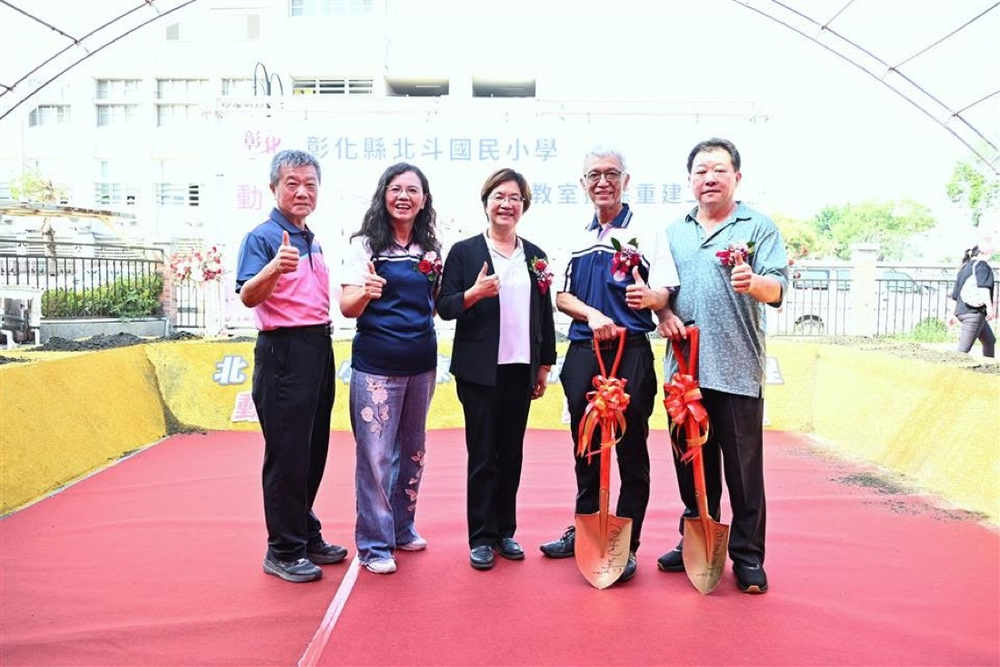
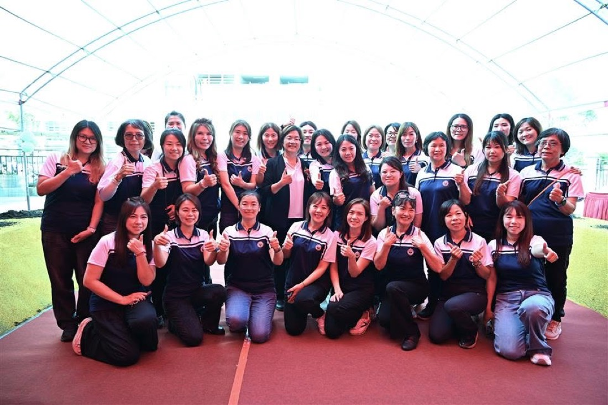
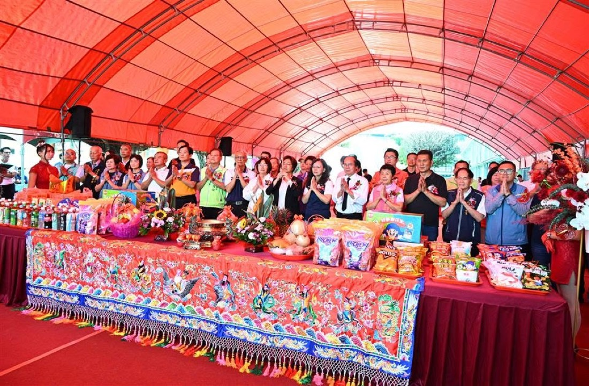
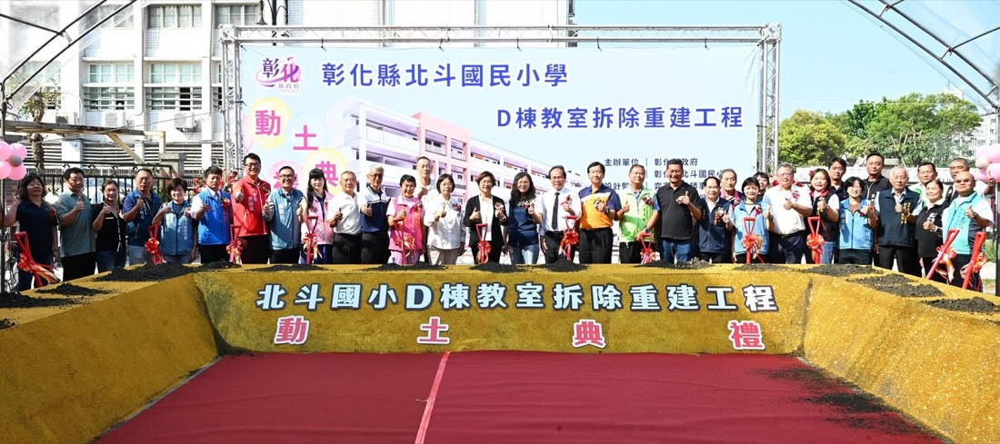

A New Chapter for Building DD 棟教室拆除重建 · 動土典禮
The county government held the groundbreaking ceremony for the reconstruction of Building D at Beidou Elementary, presided over by County Magistrate Wang Hui-mei. Building D opened in 1975 with four classrooms and grew through eight separate extensions into the block we know today; now, to keep students and staff safe and to raise the quality of teaching, the county has committed NT$206.66 million to replace it. The new four-storey building will hold more than twenty rooms, including flexible teaching spaces and a library classroom, with the surrounding grounds redesigned to feel more open and welcoming. Completion is expected by the end of 2028. During construction the county is also funding temporary classrooms, utility relocation and temporary restrooms so that teaching can carry on as normal. The Magistrate noted that education is a hundred-year undertaking, and that giving children a safe, well-equipped place to learn is a responsibility the county does not take lightly.
彰化縣政府於北斗國小舉行「D 棟教室拆除重建工程」動土典禮，由縣長王惠美親自主持，宣告校園建設邁入新的里程碑。D 棟教室自民國 64 年四間教室啟用，歷經八次擴建才形成目前的方直外觀，承載了最多師生的回憶；為確保師生安全及提升教學品質，縣府編列 2 億 666 萬餘元縣款推動拆除重建，預計 117 年底完工。重建後將提供四層樓、含多元教室與圖書教室等合計 20 餘間教室的全新校舍，周邊並做整體規劃，使教學環境更為開闊與友善。重建期間，縣府同步補助安置教室、水電遷移與臨時廁所經費，讓師生維持正常良好的教學環境。王縣長表示，教育是百年大計，為孩子打造安全、完善的學習環境，是縣府責無旁貸的責任。